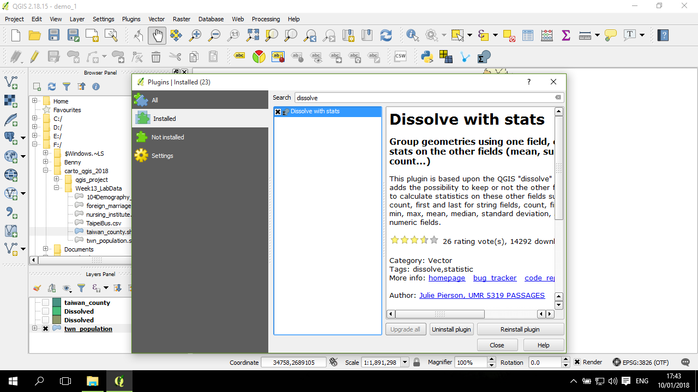
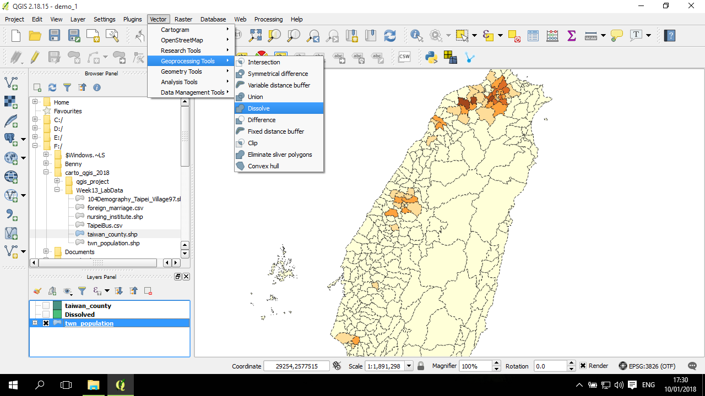
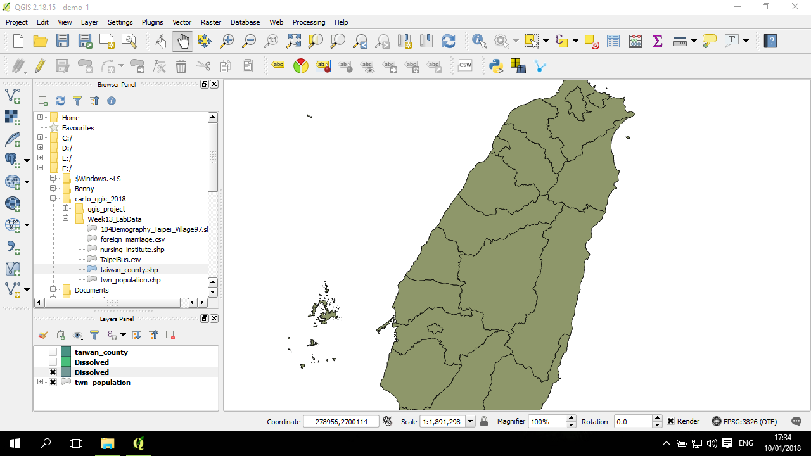
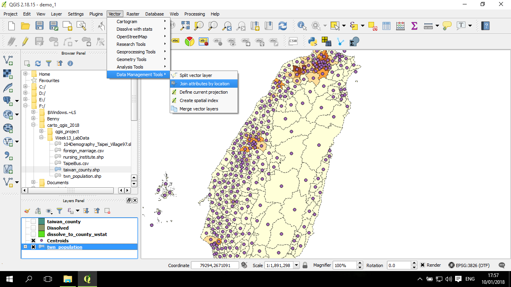

依欄位合併(dissolve)
Dissolve 是一個很常會進行的一個動作，概念上是將一個 面圖層，依據某一個欄位進行合併。例如，對鄉鎮圖層，依據縣市欄位來進行合併。或是將整個研究區進行合併，例如把所有縣市合併成台灣的海岸線。
QGIS 的 dissolve 有一些問題，主要是在處理統計資訊上，不過如果並沒有要應用這些統計值(例如是為了產生縣市面的邊界，來源的鄉鎮的統計數值並不會被用到的情況下)，則不成問題。
若是需要在 dissolve 時，也依據欄位來將統計數值進行加總、平均等動作，建議使用下方介紹的 套件 Dissolve with stats。套件的安裝方式請參考套件安裝。若無法使用，也可以透過下面介紹的方法來達到同樣的目的。
以下主要用鄉鎮人口資料(點擊下載)作說明如何從鄉鎮加總到縣市。
全部合併成一個面
下列說明的是如何從 鄉鎮合併成臺灣的海岸線。
QGIS 自帶的 Dissolve 工具在 Vector-->Geoprocessing Tools-->Dissolve
視窗是這個樣子，其中 Input layer 選要 dissolve 的來源圖層；其下方的 Dissolve all (do not use field) 標記起來則表示將所有面都合併成一個面；在 Dissolved 欄位，點後面的 ... 按鈕：
使用 Dissolve with stats 套件
確認 Dissolve with stats 套件已安裝：

安裝好後，可以到 Vector-->Dissolve with stats-->Dissolve with stats 來打開 dissolve 視窗：
這視窗很簡單，第一個欄位項目是來源圖層的選項；第二個選項是要依據哪一個欄位進行合併，這裡選的是縣市ID；接下來的表單是讓使用者勾選「哪些欄位要留下來」，及「如何處理這些統計量」的地方。要留下的需要在 keep 標記，然後在後面 stat 的地方選擇如何計算這個統計量：
先產生鄉鎮點，再以 spatial join 到 dissolve 的面圖層
假如在較舊、或未來的 QGIS 版本中，上述 Dissolve with stats 套件不能用的情況下，且 QGIS 未提供統計量的 dissolve 處理方式，則可以選擇用這種轉個彎的方式。概念很簡單，就是先將鄉鎮資料進行兩件事，一件事是 dissolve 得到縣市的面資料；另一件事是產生 centroid，因為 centroid 會繼承所有原來的面的資料的屬性。在完成上述兩件事後，接下來可以將 centroid 圖層依照空間 join 到縣市的面資料上，因為在 join 的過程 QGIS 會讓使用者決定是否要、及要如何處理多點對一面情況下，計算其統計量 (例如加總、平均、計次等)。
以 dissolve 產生縣市面圖層
方法與前述產生台灣海岸線的方法類似：

在這需要注意的是， Dissolve all 的標記需要取消掉；在 Unique ID field 可以跟前面一樣選擇 COUNTY_ID：
取得一個縣市面圖層資料：
 .
這面圖層的屬性表中的數值，是預設成會取得來源資料中的第一筆COUNTY_ID屬於各個面的那筆來當作是 dissolve 後的屬性，在處理縣市名稱時沒有問題，不過在統計量時，我們常會用到的是將其加總。
產生 centroid
這步驟很簡單，請參考 centroid 章節

spatial join
空間 join 的工具是在 Vector-->Data Management Tools-->Join attributes by location：
這是 join 的視窗。目標圖層是 Dissolved (前面準備的縣市面圖層)；Join vector layer 是 centroid 圖層；幾何關係的確認方法是 intersects (應該是落在面中的點，因此兩者必然在空間結構上相交)；Attribute summary 的部分輸入 「sum」 就好，其他方法可以刪除掉，因為在這個範例中，有意義的只有人數加總的值。：

將視窗往下移，會在 Joined table 的底下有一個 Joined layer，這裡填寫輸出的路徑與檔名：
合併後的屬性表
QGIS 會自動在檔名的前面加上 sum 字樣，這些是透過 join 而產生的欄位，在屬性表的偏前面區域會有透過dissolve 來的欄位，應該需要刪除掉：
屬性表的最後有一個 count 欄位，是 join 過程中，被 join 進來的點有幾筆。
透過屬性表的計算，把縣市的老化指數給計算好：
用分層設色圖 把縣市人口老化指數上色到面：